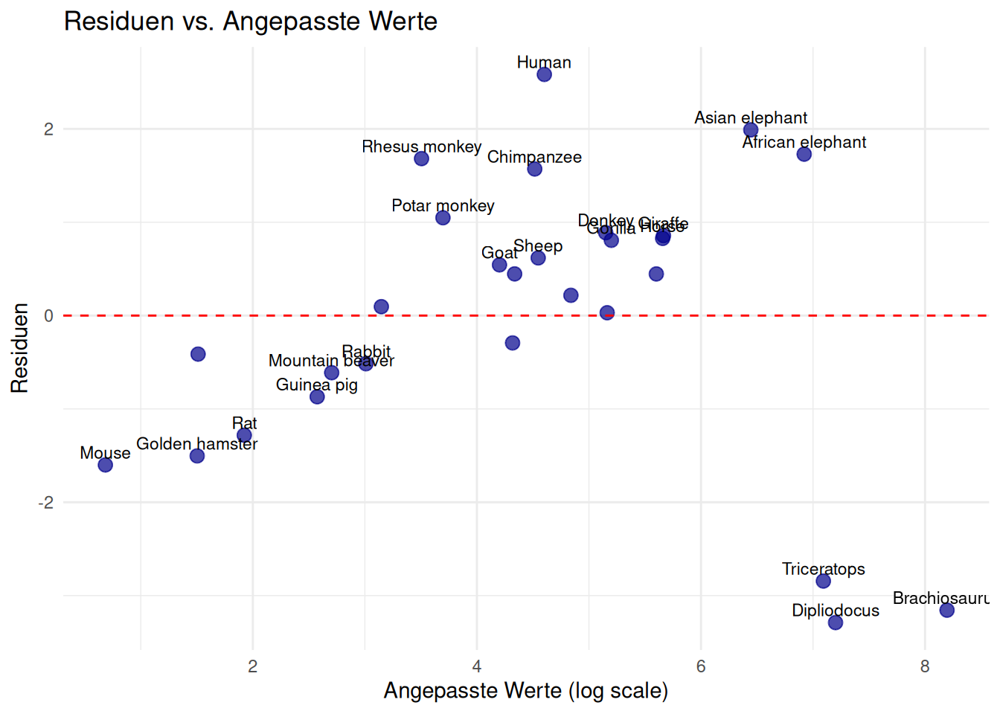

| Art | Körpergewicht_kg | Gehirngewicht_g | Log_Körpergewicht | Log_Gehirngewicht |
|---|---|---|---|---|
| Mountain beaver | 1.350 | 8.1 | 0.130 | 0.908 |
| Cow | 465.000 | 423.0 | 2.667 | 2.626 |
| Grey wolf | 36.330 | 119.5 | 1.560 | 2.077 |
| Goat | 27.660 | 115.0 | 1.442 | 2.061 |
| Guinea pig | 1.040 | 5.5 | 0.017 | 0.740 |
| Dipliodocus | 11700.000 | 50.0 | 4.068 | 1.699 |
| Asian elephant | 2547.000 | 4603.0 | 3.406 | 3.663 |
| Donkey | 187.100 | 419.0 | 2.272 | 2.622 |
| Horse | 521.000 | 655.0 | 2.717 | 2.816 |
| Potar monkey | 10.000 | 115.0 | 1.000 | 2.061 |
| Cat | 3.300 | 25.6 | 0.519 | 1.408 |
| Giraffe | 529.000 | 680.0 | 2.723 | 2.833 |
| Gorilla | 207.000 | 406.0 | 2.316 | 2.609 |
| Human | 62.000 | 1320.0 | 1.792 | 3.121 |
| African elephant | 6654.000 | 5712.0 | 3.823 | 3.757 |
| Triceratops | 9400.000 | 70.0 | 3.973 | 1.845 |
| Rhesus monkey | 6.800 | 179.0 | 0.833 | 2.253 |
| Kangaroo | 35.000 | 56.0 | 1.544 | 1.748 |
| Golden hamster | 0.120 | 1.0 | -0.921 | 0.000 |
| Mouse | 0.023 | 0.4 | -1.638 | -0.398 |
| Rabbit | 2.500 | 12.1 | 0.398 | 1.083 |
| Sheep | 55.500 | 175.0 | 1.744 | 2.243 |
| Jaguar | 100.000 | 157.0 | 2.000 | 2.196 |
| Chimpanzee | 52.160 | 440.0 | 1.717 | 2.643 |
| Rat | 0.280 | 1.9 | -0.553 | 0.279 |
| Brachiosaurus | 87000.000 | 154.5 | 4.940 | 2.189 |
| Mole | 0.122 | 3.0 | -0.914 | 0.477 |
| Pig | 192.000 | 180.0 | 2.283 | 2.255 |
Anhang A — Rohdaten
Zusätzliche Materialien und Daten, die nicht im Hauptteil der Arbeit enthalten sind, werden im Anhang aufgeführt.
Der vollständige MASS::Animals Datensatz mit allen 28 Säugetierarten:
A.1 Datenquelle und -qualität
Die Daten stammen aus verschiedenen Quellen und wurden über mehrere Jahrzehnte zusammengetragen. Einige Besonderheiten der Datensammlung:
- Afrikanischer Elefant: Mit 6654 kg Körpergewicht und 5712 g Gehirngewicht das grösste Säugetier in der Stichprobe
- Spitzmaus: Das kleinste Säugetier mit nur 0.004 kg Körpergewicht und 0.14 g Gehirngewicht
- Mensch: Zeigt mit 1320 g Gehirngewicht bei 62 kg Körpergewicht eine deutliche positive Abweichung von der allometrischen Beziehung
- Primaten generell: Schimpanse, Gorilla und Rhesusaffe zeigen alle überdurchschnittlich grosse Gehirne
A.2 Ausreisser-Analyse
